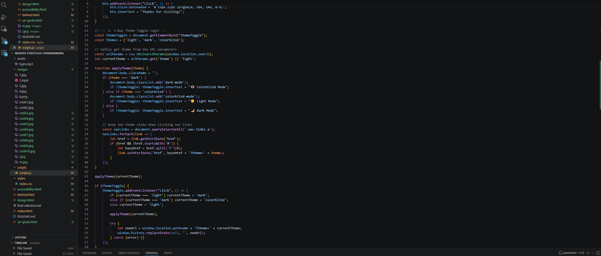
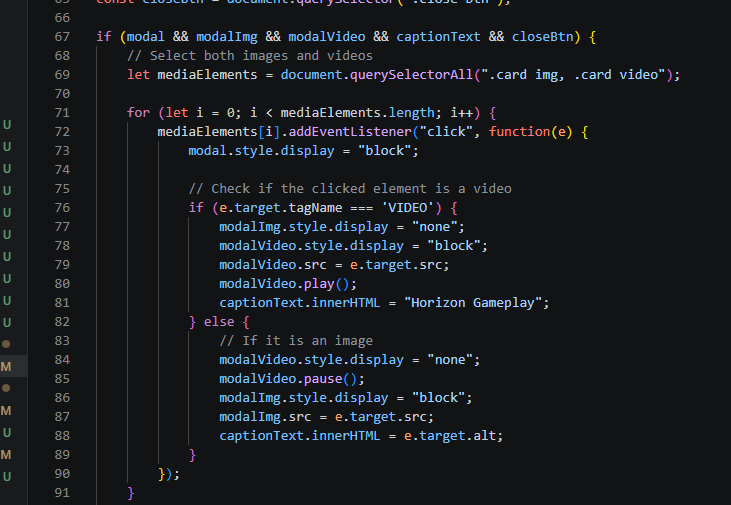
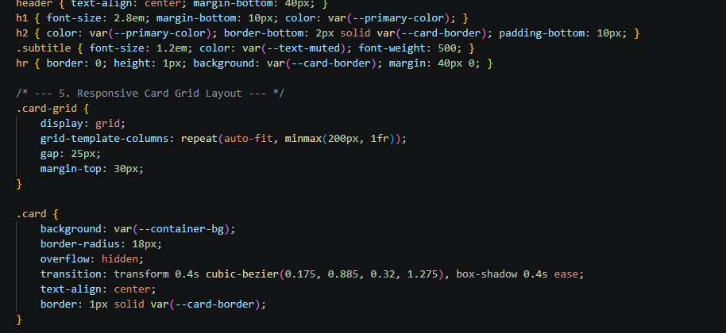
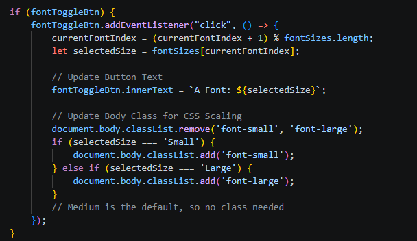
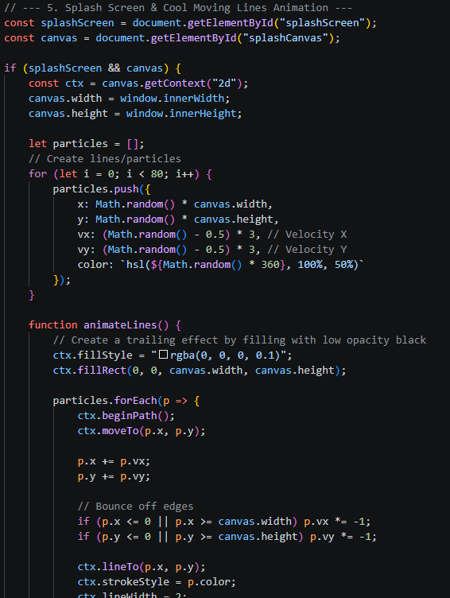
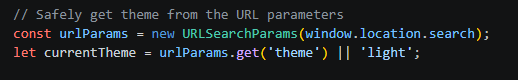
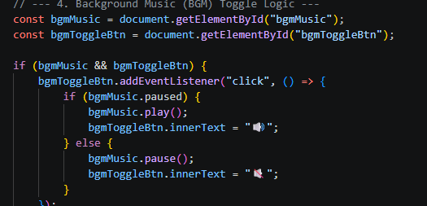
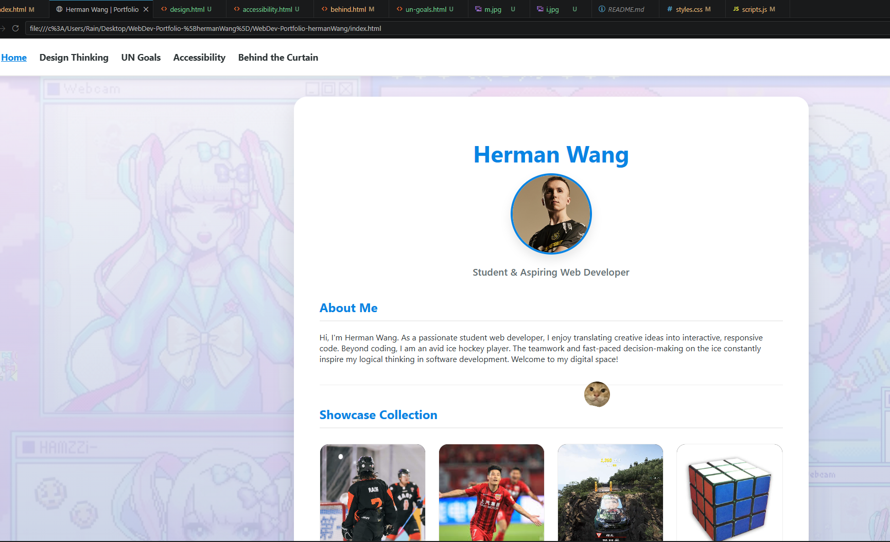

1. Developer Tools & Code Screenshots
Throughout the development process, I heavily relied on VS Code and Browser Developer Tools to inspect elements, debug JavaScript, and perfect the CSS layout. Below is a 10-picture gallery documenting my coding logic (Click to enlarge).

1. Semantic HTML

2. CSS Variables Setup

3. Theme Toggle Logic

4. Lightbox Modal Code

5. Responsive Grid

6. Font Size Scaling

7. Canvas Animation

8. URLSearchParams

9. Audio Control

10. Elements Debugging
2. Explanation of Challenges
The Cross-Page Theme Bug: The absolute biggest headache of this project was getting the JavaScript to remember the user's theme choice when navigating between different pages. Originally, I tried using `localStorage`, but browser security blocked it since I was opening files locally. My solution was to use the `URLSearchParams` API to dynamically pass the theme in the URL. It took hours of debugging, but it worked flawlessly!
Z-Index and Canvas Animation: Adding the splash screen animation was tricky. The canvas lines were either covering the UI text or disappearing completely. I had to strictly manage my CSS `z-index` properties to ensure the animation stayed behind the text but above the main webpage until clicked.
3. Learning Takeaways
Looking back, the coolest part of this project wasn't just writing the code, but learning how to fix it when it broke. Using inner browser Tools to inspect my own DOM and tracking down syntax errors in the vscode made me feel like an actual web developer. I realized that coding is 20% writing and 80% debugging. I am incredibly proud of the advanced functionalities I integrated into this Extending-level portfolio.